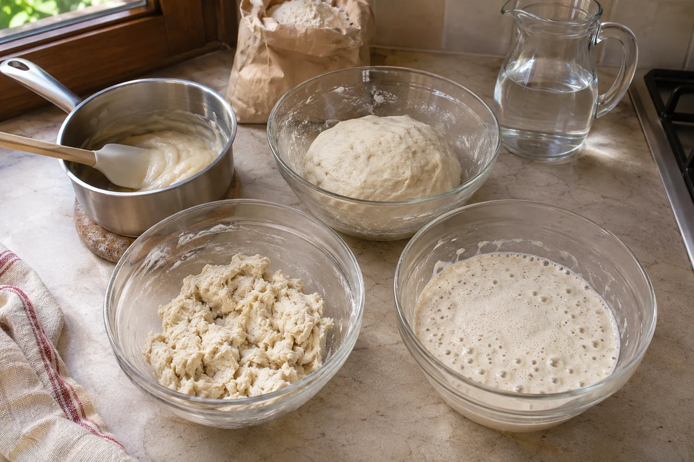

PANE E PIZZA · TRE FASI E LE TECNICHE · 20 NOVEMBRE 2026
Dal lievito naturale alla pagnotta e alla pizza
Quattro guide gratuite, da seguire nell'ordine: prima crei e porti a maturazione la pasta madre o il LI.CO.LI.; poi impasti una pagnotta da circa 500 g oppure due pizze alla napoletana. Ogni ricetta ha pesi, temperature, tempi e un calendario.
Per capire le tecniche dell'impasto

Tangzhong, autolisi, biga e poolish
Una guida in più per capire cosa sono e a cosa servono distintamente: morbidezza, lavorabilità o preimpasto fermentato. Esempi con i grammi, confronto e conteggio di acqua e farina.
Apri la guida alle quattro tecnicheFase 1. Prepara il lievito

Pasta madre solida
Per iniziare: 200 g di farina e 100 g d'acqua. Per rinfrescare: 100 g madre + 200 g farina + 100 g acqua. Calendario e prova di crescita.
Apri la guida alla madre solida
LI.CO.LI. liquido
Per iniziare: 50 g di farina e 50 g d'acqua. Ogni rinfresco: 50 g LI.CO.LI. + 50 g farina + 50 g acqua. Calendario e controllo del raddoppio.
Apri la guida al LI.CO.LI.Le immagini sono illustrazioni fotorealistiche generate con intelligenza artificiale: aiutano a riconoscere la consistenza, ma non sostituiscono la verifica della crescita nel proprio barattolo.
Fase 2. Prepara il pane

Pane semplice da circa 500 g
Una pagnotta con pasta madre solida e dose alternativa con LI.CO.LI.. Due cotture: friggitrice ad aria da 8 litri con teglia da circa 17,5 cm oppure forno tradizionale. Temperatura al cuore e calendario.
Apri la guida al paneFase 3. Prepara la pizza

Pizza alla napoletana con LI.CO.LI.
Due panetti da circa 251 g, lievitazione di circa 24 ore, Margherita pesata, stesura a mano e confronto tra disciplinare AVPN e cottura domestica. Non è una certificazione STG.
Apri la guida alla pizzaLa maturazione non avviene in una data uguale per tutti. Controlla sempre la vitalità del lievito prima di impiegarlo nel pane.